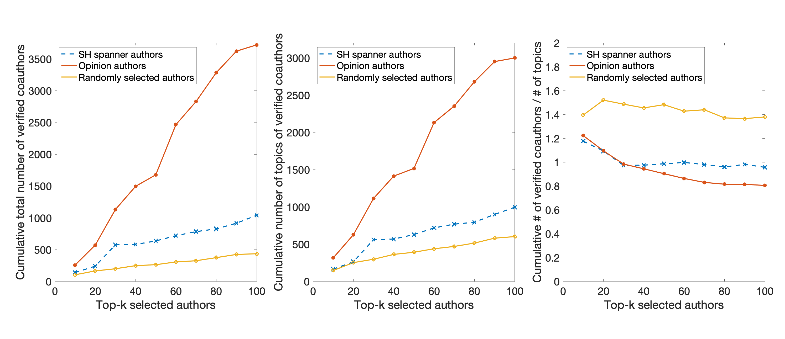
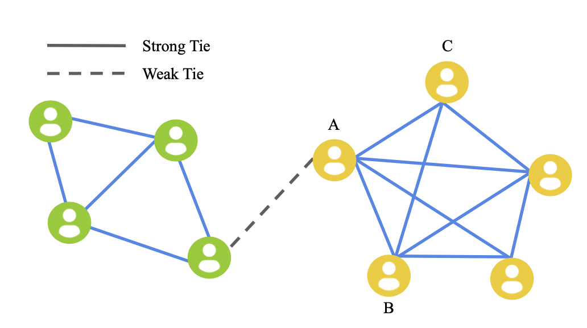

Zihang Lin
Undergraduate Student, School of Computer Science, Fudan UniversityVisiting Predoctoral Fellow, Kellogg School of Management, Northwestern University
Email: ezlzh101@gmail.com, zihanglin18@fudan.edu.cn, zihang.lin@kellogg.northwestern.edu
CV / GitHub
Twitter: David Zihang Lin@lin_zihang
About Me
I am a junior student at Fudan University, and also a visiting predoctoral fellow at Northwestern University. My research interests include Social Network Analysis, Computational Social Science, and Science of Science. Overall GPA: 3.64/4.0, Ranking: 8/105 I am going to apply to PhD programs in Fall 2022. Currently, I am engaged in research on Science of Science, as well as applying social theories to Social Network Analysis.
Publication
-
Structural Hole Theory in Social Network Analysis: A Review.
Zihang Lin#, Yuwei Zhang#, Qingyuan Gong, Yang Chen, Atte Oksanen, Aaron Yi Ding.
To Appear: IEEE Transactions on Computational Social Systems (TCSS).
Research
-

Empirical Analysis of Structural Hole Spanner Detection Methodologies in Coauthorship Networks
co-advised by Prof. Yang Chen and Dr. Qingyuan Gong, Fudan University. Jun 2020 – Present
We are analyzing the academic performance and cooperative relationship between different types of scholars, such as structural hole scholars and opinion leaders. -

Exploration of Structural Hole Theory in Social Network Analysis
co-advised by Prof. Yang Chen, Dr. Qingyuan Gong, Prof. Aaron Yi Ding, Prof. Atte Oksanen. Jan 2020 – Mar 2021
We provided a comprehensive review on the foundation, detection and practical application of structural hole theory, and facilitated researchers and developers to better apply structural hole theory and derive value-added tools.
This work has been accepted by IEEE Transactions on Computational Social Systems (TCSS).
Experience
-
Kellogg School of Management, Northwestern University. Evanston, IL
Visiting Predoctoral Fellow at Center for Science of Science and Innovation, advised by Prof. Dashun Wang. Aug 2021 – Present -
Fudan University. Shanghai, China
Undergraduate in Computer Science Sep 2018 – Present
Research Assistant at the Mobile Systems and Networking (MSN) group, advised by Prof. Yang Chen. Jun 2019 – Present
Selected Awards
- Second Prize, Scholarship for Students in Honor Class 2020
- Third Prize, Scholarship for OutStanding Students 2019
- Bronze Medal, National Olympiad in Informatics, National Finals Jul 2017
- Bronze Medal, Asia Pacific Informatics Olympiad, May 2017
- First Prize, National Olympiad in Informatics in Provinces 2017